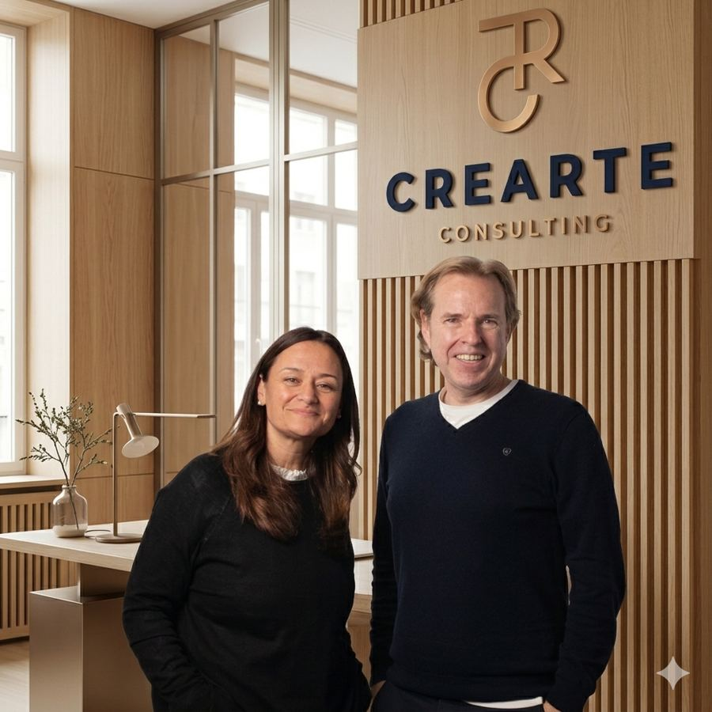

Nous sélectionnons les professionnels dont votre entreprise a besoin
Nous recherchons, sélectionnons, externalisons et mettons à disposition des professionnels, selon ce dont votre entreprise a besoin à chaque instant.
Discutons-en- 0 ans
- à connecter talents et entreprises en Europe
- 0+
- candidats interviewés
- 0 pays
- Espagne, Portugal, Royaume-Uni, Pays-Bas et France
De quoi avez-vous besoin aujourd'hui ?
Je suis une entreprise
J'ai besoin de pourvoir un poste, de trouver un dirigeant, d'externaliser un processus ou d'intégrer quelqu'un temporairement.
- Sélection de personnel
- Chasse de têtes
- Externalisation RH
- Management de transition
Je suis candidat
Je recherche activement un emploi, ou je souhaite travailler mon employabilité avant de me lancer.
Portail emploi
Trouvez le poste que vous cherchez. Dès votre première candidature, nous créons votre propre accès (identifiant et mot de passe) pour suivre toutes vos candidatures.
Voir le portail emploiMatching par IA
Dites-nous quel type de poste vous recherchez et nous vous aidons à le trouver grâce à notre technologie de matching.
Trouver mon match →Améliorez votre employabilité
Plus de 1 000 personnes déjà accompagnées dans leur transformation professionnelle, via Crearte Match.
Découvrir Crearte Match →Quatre façons de résoudre le même problème : trouver la bonne personne
Toutes nos lignes de serviceSélection
Couverture rapide des postes vacants, du junior à l'encadrement intermédiaire, avec des processus mesurables.
Chasse de têtes
Recherche confidentielle de dirigeants et de profils C-level, secteur par secteur.
Externalisation
Nous externalisons des processus RH complets lorsque le volume ou l'urgence l'exigent.
Management de transition
Des dirigeants expérimentés, disponibles en quelques semaines, pour les moments qui n'attendent pas.
La Méthode Crearte
Ce qui se fait de plus puissant aujourd'hui en sélection de personnel
Plus de 35 ans d'expérience humaine combinée en sélection, perfectionnée jour après jour grâce à la technologie et à l'intelligence artificielle. Nous combinons sélection traditionnelle, nethunting et chasse de têtes selon ce que chaque profil exige, et nous présentons des candidats en moins de 7 jours ouvrés, en travaillant au succès.
Interlocuteurs seniors
Vous échangez toujours avec des experts du secteur. Aucun profil junior ne gère votre processus ni n'est votre interlocuteur valide.
Correspondance par compétences
Nous évaluons avec des méthodologies reconnues — entretiens STAR et CAR, et analyse des compétences par incidents critiques — pas une simple discussion informelle. Chaque candidat arrive avec un résumé de correspondance face aux fonctions du poste et à ses compétences personnelles et techniques.
Transparence totale
Candidat et entreprise connaissent à tout moment l'état réel du processus, sur la plateforme ou en dehors, selon leur préférence.
Notre propre base de données
Près de 47 000 professionnels déjà analysés et classés par expertise. Nous ne partons jamais de zéro dans une recherche.
"Nous ne partons jamais de zéro dans une recherche : nous partons de près de 47 000 professionnels déjà analysés dans notre base de données. Et votre interlocuteur n'est jamais un profil junior."
Le moteur : Nethunting
Pourquoi les gens répondent quand nous les appelons
Le Nethunting est la nouvelle façon de faire de la chasse de têtes : les candidats ne sont plus seulement sur les sites d'emploi, ils sont sur les réseaux professionnels et sociaux — et c'est là qu'il faut aller les chercher. C'est pourquoi nous avons développé notre propre plateforme de recrutement, capable de se connecter en temps réel à ces réseaux et d'atteindre le plus grand nombre de candidats dans les meilleurs délais.
Mais la plateforme n'est que la moitié de l'histoire. L'autre moitié, c'est la marque personnelle d'Héctor et Susana : ils publient depuis plus de 10 ans du contenu de valeur sur les ressources humaines et l'employabilité, sans jamais décevoir cette audience. Cette constance construit quelque chose qu'aucune plateforme ne peut acheter : quand on les contacte pour un changement professionnel, les gens savent déjà qu'on ne va pas leur "vendre du rêve" — c'est une confiance accumulée, pas une campagne ponctuelle.
Cette même confiance nous permet de travailler le marché caché : des processus que nous résolvons sans publier la moindre offre, en mobilisant directement la communauté de professionnels qui nous lit déjà chaque jour.
Acheter le livre sur Amazon
Une décennie à connecter talents et entreprises en Europe
Crearte Consulting est né digital, dans un secteur traditionnellement analogique. Dès le départ, nous avons su combiner ces deux dimensions — la technologie et le contact humain en face à face — et de cette combinaison est née la Méthode Crearte, la méthodologie propre qui soutient aujourd'hui nos quatre lignes de service et qui nous a menés à travailler non seulement avec des entreprises, mais aussi avec des collectivités locales, en Espagne, au Portugal, au Royaume-Uni, aux Pays-Bas et en France.
Héctor Delgado
Diplômé en Administration et Direction d'Entreprises, avec un Master en Direction des Ressources Humaines de la Chambre de Commerce de Madrid. Avant de fonder Crearte, il a dirigé des équipes technologiques et projets dans des multinationales de la banque et de la technologie — 18 ans de sa carrière partagés entre Paris et Toulouse. Il a fondé et vendu sa propre startup de marketing digital et technologie, l'expérience qui l'a convaincu que la technologie avait beaucoup à apporter à un secteur aussi traditionnel que celui des ressources humaines.
Susana González
Psychologue de formation, avec un Master en Direction des Ressources Humaines et Organisation de l'ESIC, un Master en Communication Interne et Externe de l'Université Complutense de Madrid, et un troisième cycle en Administration du Personnel du Collège Officiel des Diplômés Sociaux de Madrid. Avec près de 35 ans d'expérience, elle a dirigé les RH de multinationales dans la technologie, la banque, l'automobile, l'industrie et l'ingénierie, siégeant dans des comités de direction rattachés à des fonds d'investissement et des sièges en Allemagne, en France et en Angleterre.
Ensemble, ils ont décidé d'unir ce savoir-faire technologique et cette expérience en ressources humaines pour fonder Crearte Consulting.
Notre podcast
Vous nous voyez en parler en direct, pas seulement le lire
Héctor et Susana expliquent le fonctionnement interne de Crearte Consulting : pourquoi la Méthode Crearte fonctionne, et pourquoi c'est bien plus que transmettre des CV.
Entreprises et administrations qui nous font confiance
Nous travaillons avec des entreprises privées et des collectivités locales en Espagne, au Portugal, au Royaume-Uni, aux Pays-Bas et en France. En attente : remplacer chaque encadré par le logo réel du client (fond transparent, de préférence PNG ou SVG).
On parle de nous dans
Ressources pour les professionnels RH
Voir tous les articlesLe coût réel d'un processus de chasse de têtes
Qu'est-ce que le management de transition et quand y recourir
Qu'est-ce que le RPO et quand externaliser la sélection
Ce que disent les entreprises qui ont déjà travaillé avec nous
« Excellent travail d'Almudena. Toujours en contact avec moi et avec l'entreprise. Je tiens à la remercier pour son énorme implication, tant personnelle que professionnelle, dans le processus de sélection auquel je me suis inscrit. »
Candidat(e)
« Même si je n'ai pas été retenu(e), j'ai eu toutes les informations de manière transparente et accessible, ce qui m'a permis de renforcer ma recherche. »
Candidat(e)
« Ils m'ont contacté(e) pour une offre d'emploi, en m'informant du poste, de son périmètre et de la durée du processus. »
Candidat(e)
Parlons de ce dont vous avez besoin
Qu'il s'agisse d'un poste urgent, d'une recherche confidentielle ou simplement d'une question : il y a une vraie personne en face, pas un formulaire.
Héctor Delgado
[Fonction d'Héctor — en attente de confirmation]
hector.delgado@crearteconsulting.com